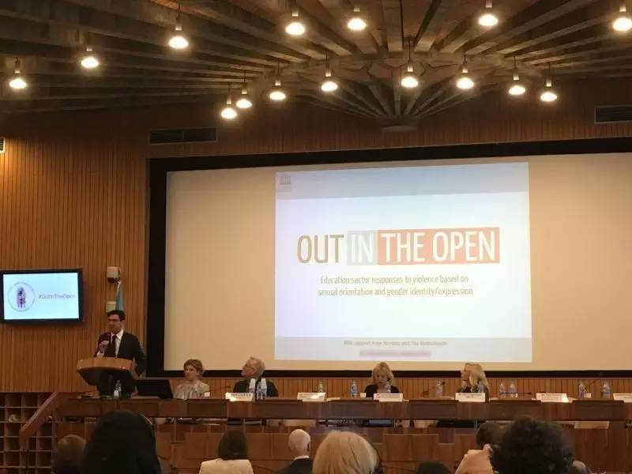

全球教育部长大会幕后花絮：教育部，你竟然是这种部！

时值5月17日世界不再恐同日，轰轰烈烈（然而似乎并没有很多人知道……）的全球教育部长大会在教科文巴黎总部拉开帷幕。为期两天的会议旨在联合各国教育部长、学生代表以及民间组织，共同应对性少数学生所遭受的校园欺凌问题。
全国性少数青年的联合组织中国青年同伴网络（China LGBT Youth Network，简称“青桐”)， 也应邀参加会议，青桐代表花花被安排在18日上午发言，介绍中国校园欺凌相关研究的最新成果。
令人意外的是，一向被认为“态度保守”的中国教育部，并没有对“敏感议题”敬而远之，而是选派了两名代表参加，所属领域分别是基础教育和教育科学研究。
在17日的开幕式上，一向以呆萌和中二著称的花花，入场时误坐在了官方代表区……并迫切地张望全场寻找来自教育部的代表，希望在茶歇时进行勾搭（国际事务出身的某花真是有很强的勾搭意识）。正在这时……被花花当作东亚某岛国的代表发出了令人惊讶的声音：“你也是中国来的么？我们是教育部的……”为了试探教育部对性少数学生的真实态度，某花起初并没有明示自己的基佬身份，并且选择唠嗑模式开始了对话。
让某花惊讶的是，教育部官员的开放程度和专业程度远超我们的想象。对于“境外势力的意识形态渗透”，他们并没有一味的排斥，而是结合本部现有的教育政策，逐条分析教科文的提案中，哪些与本国现状相符，哪些过于超前暂且难以付诸实践，并认真考虑是否可以响应教科文的倡议，签署一份承诺在本国应对恐同欺凌的声明。
当被问到教育部官方对于性少数议题的态度，官员们的回应是，这并不是什么敏感议题，性少数学生也是学生，他们所遭遇的问题终究需要解决。只是教育部本身也面临来自社会的压力，在现阶段难以公开表示对性少数学生的支持。并且在“教育公平”这一议题上，教育部目前更关注的是城乡差距和区域公平，性少数学生的教育公平问题暂且没有提上日程。至于坊间流传的“教育部恐同”“教育部向高校发文压制同志学生”，则完全是子虚乌有。
值得欣喜的是，在校园欺凌这一议题上，有两大利好消息：
1）虽然反校园欺凌法的出台暂时没有提上日程，教育部已经于不久前发布《国务院教育督导委员会办公室关于开展校园欺凌专项治理的通知》，全文可点击“阅读原文”。这是教育部自半年以来酝酿校园欺凌应对方案的初步成果，接下来会有更多的政策和法规出台。作为部委级别的宏观政策，这些方案自然不太可能将学生群体“分门别类”，细化到针对某一部分学生的欺凌行为，却足以保护性少数学生免受欺凌。
2）两位官员认为青桐所作的研究非常有意义，同时符合客观事实，“真实地去呈现”就好。在他们看来，针对性少数群体所进行的研究，并不是什么“禁区”和“敏感话题”，反而是很“前沿”的研究领域，值得去开拓发展。接下来，青桐会向教育部分享进一步的研究成果，甚至有可能参与到相关的研究项目和政策制定的意见征集过程中。
与大家的直观印象略有出入的是，教育部并不“恐同”。更复杂的现实是，教育部与地方部门、各高校之间的关系远非“令行禁止”那么简单。我们所遭遇的来自教师甚至学校官方的歧视和欺凌，是否和教育部直接相关，是否可以通过教育部来解决，都是有待商榷的。另外，性少数学生个体或团体在注册组织、开展活动中所遭受的压力，很大一部分来自于团委或安全部门，这些是教育部门无法直接干涉的。
但毫无疑问，这些问题是我们要着力去解决的，也需要大家的共同努力。因此，我们向所有的性少数学生社群成员发出以下倡议：
1）以友好对话的方式和教育部门进行沟通。青桐愿意为有志于在本校开展教师游说等倡导工作的学生个体或群体提供支持，并促进社团小组之间、学生和教师群体之间的交流。我们也可以成为性少数学生群体和教育部之间沟通的管道，欢迎大家向我们反馈更多的需求和意见。
2）尽量避免过激的倡导行为。目前对于教育部门来说，性少数学生还是一个隐而不见、知之甚少的群体。因此，以什么样的姿态出现在教育部的视野中就相当重要。如果教育部对性少数学生群体的第一印象是“不友好”“偏激”“具有攻击性”“煽动力强”，那显然对相关议题的推进是很不利的，需要耗费更多的努力去扭转这样的负面印象。更危险的是，一个本身并不敏感（至少对于教育部）的议题，会因此增加政治敏感性。
3）加强对相关法律政策的学习，以此作为维护自身权益的工具，这同样也是来自于教育部官员的一条建议。虽然国家没有具体的保护性少数学生群体的法律政策，但我们的教育权利受到《中华人民共和国教育法》《未成年人保护法》等法律的保障，性少数身份不是任何学生、教师或行政人员侵犯我们权利的正当理由。当某些行政人员通过“处分”“记档案”“开除”等手段，用公权力为自己的非法行为披上合法外衣的时候，我们必须要意识到，以法律武器捍卫自身权益的责任在于我们自己，妥协和退让只会让欺凌者更加肆无忌惮。如果条件允许，青桐也会开展法律援助的项目，使更多的社群成员在面临来自公权力的欺凌时不再孤立无援。